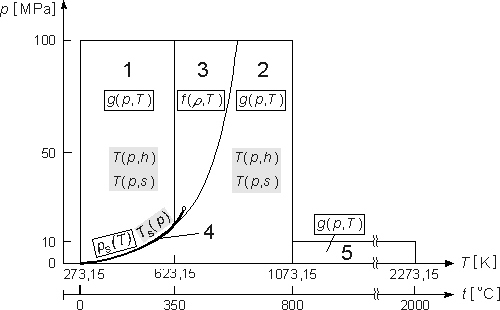

In September 1997, the International Association for the Properties of Water and Steam (IAPWS) adopted a new formulation for the thermodynamic properties of water and steam for industrial use. This new industrial standard is called "IAPWS Industrial Formulation for the Thermodynamic Properties of Water and Steam" (IAPWS-IF97). The formulation IAPWS-IF97 replaces the previous industrial standard IFC-67.
Based on this new formulation, a new steam table, titled "Properties of Water and Steam" by W. Wagner and A. Kruse, was published by the Springer-Verlag, Berlin - New-York - Tokyo in April 1998. This steam table, ref. [1] is bilingual (English / German) and contains a complete description of the equations of IAPWS-IF97. This reference is the authoritative source of information for this implementation. A mostly identical version has been published by the International Association for the Properties of Water and Steam (IAPWS) with permission granted to re-publish the information if credit is given to IAPWS. This document is distributed with this library as IF97.pdf. In addition, the equations published by IAPWS for the transport properties dynamic viscosity (standards document: visc.pdf) and thermal conductivity (standards document: thcond.pdf) and equations for the surface tension (standards document: surf.pdf) are also implemented in this library and included for reference.
The functions in BaseIF97.mo are low level functions which should only be used in those exceptions when the standard user level functions in Water.mo do not contain the wanted properties.
Based on IAPWS-IF97, Modelica functions are available for calculating the most common thermophysical properties (thermodynamic and transport properties). The implementation requires part of the common medium property infrastructure of the Modelica.Thermal.Properties library in the file Common.mo. There are a few extensions from the version of IF97 as documented in IF97.pdf in order to improve performance for dynamic simulations. Input variables for calculating the properties are only implemented for a limited number of variable pairs which make sense as dynamic states: (p,h), (p,T), (p,s) and (d,T).
1. Structure and Regions of IAPWS-IF97
The IAPWS Industrial Formulation 1997 consists of a set of equations for different regions which cover the following range of validity:
| 273,15 K < T < 1073,15 K | p < 100 MPa |
| 1073,15 K < T < 2273,15 K | p < 10 MPa |

Figure 1: Regions and equations of IAPWS-IF97
In addition to these basic equations, so-called backward
equations are provided for regions 1, 2, and 4 in form of
The complete description of the individual equations of the new industrial formulation IAPWS-IF97 is given in IF97.pdf. Comprehensive information on IAPWS-IF97 (requirements, concept, accuracy, consistency along region boundaries, and the increase of computing speed in comparison with IFC-67, etc.) can be taken from IF97.pdf or [2].
| Common name |
Abbreviation |
Unit |
|
| 1 |
Pressure | p |
Pa |
| 2 |
Temperature | T |
K |
| 3 |
Density | d |
kg/m3 |
| 4 |
Specific volume | v |
m3/kg |
| 5 |
Specific enthalpy | h |
J/kg |
| 6 |
Specific entropy | s |
J/(kg K) |
| 7 |
Specific internal energy |
u |
J/kg |
| 8 |
Specific isobaric heat capacity | cp |
J/(kg K) |
| 9 |
Specific isochoric heat capacity | cv |
J/(kg K) |
| 10 |
Isentropic exponent, kappa |
kappa ( k) |
1 |
| 11 |
Speed of sound |
a |
m/s |
| 12 |
Dryness fraction |
x |
kg/kg |
| 13 |
Specific Helmholtz free energy, f = u - Ts | f |
J/kg |
| 14 |
Specific Gibbs free energy, g = h - Ts | g |
J/kg |
| 15 |
Isenthalpic exponent, |
theta (q) |
1 |
| 16 |
Isobaric volume expansion coefficient, alpha = v-1 (dv/dT)p | alpha (a) |
1/K |
| 17 |
Isochoric pressure coefficient, |
beta (b) |
1/K |
| 18 |
Isothermal compressibility, g |
gamma (g) |
1/Pa |
| 19 |
Dynamic viscosity | eta (h) |
Pa s |
| 20 |
Kinematic viscosity | nu (n) |
m2/s |
| 21 |
Thermal conductivity | lambda (l) |
W/(m K) |
| 22 |
Surface tension | sigma (s) |
N/m |
The properties 1-11 are calculated by default with the functions for dynamic simulation, 2 of these variables are the dynamic states and are the inputs to calculate all other properties. In addition to these properties of general interest, the entries to the thermodynamic Jacobian matrix which render the mass- and energy balances explicit in the input variables to the property calculation are also calculated. For an explanatory example using pressure and specific enthalpy as states, see the Examples sub-package.
The high-level calls to steam properties are grouped into records comprising both the properties of general interest and the entries to the thermodynamic Jacobian. If additional properties are needed the low level functions in BaseIF97 provide more choice.
Extends from Modelica.Icons.Library (Icon for library).
| Name | Description |
|---|---|
| constants for iterations internal to some functions | |
| constant IF97 data and region limits | |
| get normalization temperature for region 1, 2 or 5 | |
| get normalization pressure for region 1, 2 or 5 | |
| critical point data | |
| triple point data | |
| functions to find the current region for given pairs of input variables | |
| Base functions as described in IAWPS/IF97 | |
| the melting line and sublimation line curves from IAPWS | |
| transport properties for water according to IAPWS/IF97 | |
| functions for calculating the isentropic enthalpy from pressure p and specific entropy s | |
| efficient inverses for selected pairs of variables | |
| simple explicit functions for one region only | |
| steam properties in the two-phase rgion and on the phase boundaries | |
| function to calculate some extra thermophysical properties in regions 1, 2, 3 and 5 as f(p,h) | |
| function to calculate some extra thermophysical properties in regions 1, 2, 3 and 5 as f(p,T) |
 Modelica.Media.Water.IF97_Utilities.BaseIF97.IterationData
Modelica.Media.Water.IF97_Utilities.BaseIF97.IterationData
Modelica.Media.Water.IF97_Utilities.BaseIF97.data
Constants needed in the international steam properties IF97. SCRIT and HCRIT are calculated from Helmholtz function for region 3.
Extends from Modelica.Icons.Record (Icon for a record).
 Modelica.Media.Water.IF97_Utilities.BaseIF97.getTstar
Modelica.Media.Water.IF97_Utilities.BaseIF97.getTstar
| Name | Description |
|---|---|
| region | IF 97 region |
| Name | Description |
|---|---|
| Tstar | normalization temperature [K] |
Modelica.Media.Water.IF97_Utilities.BaseIF97.getpstar
| Name | Description |
|---|---|
| region | IF 97 region |
| Name | Description |
|---|---|
| pstar | normalization pressure [Pa] |
 Modelica.Media.Water.IF97_Utilities.BaseIF97.critical
Modelica.Media.Water.IF97_Utilities.BaseIF97.critical
Critical point data for IF97 steam properties. SCRIT and HCRIT are calculated from helmholtz function for region 3
Extends from Modelica.Icons.Record (Icon for a record).
Modelica.Media.Water.IF97_Utilities.BaseIF97.triple
Vapour/liquid/ice triple point data for IF97 steam properties.
Extends from Modelica.Icons.Record (Icon for a record).
 Modelica.Media.Water.IF97_Utilities.BaseIF97.extraDerivs_ph
Modelica.Media.Water.IF97_Utilities.BaseIF97.extraDerivs_ph
| Name | Description |
|---|---|
| p | pressure [Pa] |
| h | specific enthalpy [J/kg] |
| phase | phase: 2 for two-phase, 1 for one phase, 0 if unknown |
| Name | Description |
|---|---|
| dpro | thermodynamic property collection |
Modelica.Media.Water.IF97_Utilities.BaseIF97.extraDerivs_pT
| Name | Description |
|---|---|
| p | pressure [Pa] |
| T | temperature [K] |
| Name | Description |
|---|---|
| dpro | thermodynamic property collection |